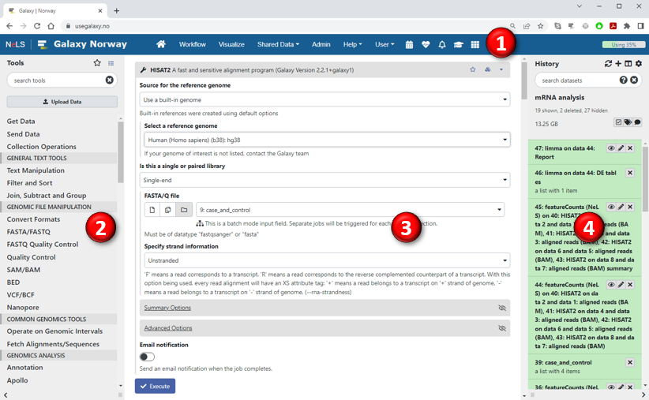
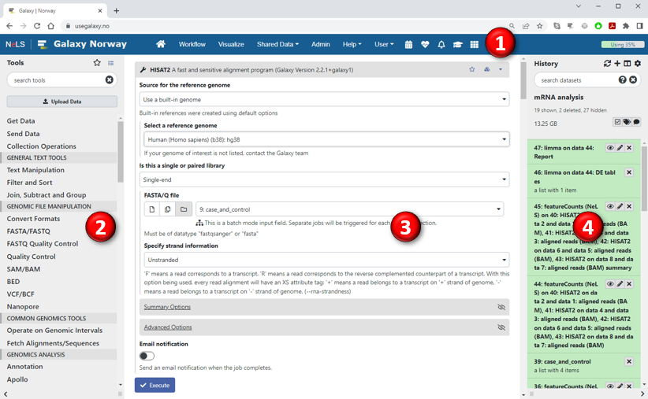
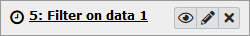
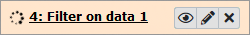
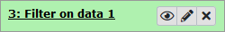
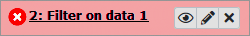

Galaxy Basics
Galaxy is a web-based analysis platform that allows users to upload datasets
(which are organized into histories)
and run tools to manipulate and analyze these datasets.
Tools can also be combined into multi-step workflows that can be executed as a single unit.
The Galaxy user-interface is divided into four sections:

The Galaxy user-interface is divided into four sections:
- Menu bar: This header on top of the page contains tabs and drop-down menus to access different parts of Galaxy.
- Tools panel: The panel on the left side lists all the tools that are available on the Galaxy server.
- Main panel: The panel in the middle is the main work area and its contents will vary depending on what you are currently doing.
- History panel: The panel on the right shows the current "history" containing your datasets and scheduled jobs.

Galaxy organizes users' datasets into histories. Every new dataset that is either uploaded to Galaxy or generated by running a tool will be added to the top of the user's current history.
Hence, histories represent a chronological record of all the steps you have performed in your analysis.
In addition, every dataset in a history also includes complete information about how that dataset was created, for instance which tool was used to produce the data and the specific parameter settings that tool was run with. This makes it possible to trace the provinance and evolution of each dataset through time,
and it also enables automatic extraction of workflows from a history to reproduce the complete analysis or apply the same processing steps to other datasets.
Users can have multiple histories with different datasets, but only one history will be active at a time. To create a new empty history, press the plus-sign at the top of the history panel (second button). To switch to a different history, press the "View all histories" button just to the right of the plus-sign or select Histories from the User-menu in the top menu bar. Pressing the cogwheel icon at the top of the History panel brings up the history options menu, which will allow you to share the history with other users, delete it or export it.
Each dataset/job in the history is displayed in a colour that reflects its status:
Users can have multiple histories with different datasets, but only one history will be active at a time. To create a new empty history, press the plus-sign at the top of the history panel (second button). To switch to a different history, press the "View all histories" button just to the right of the plus-sign or select Histories from the User-menu in the top menu bar. Pressing the cogwheel icon at the top of the History panel brings up the history options menu, which will allow you to share the history with other users, delete it or export it.
Each dataset/job in the history is displayed in a colour that reflects its status:
| Colour | Status | Description |
|---|---|---|
|  | Queued | The job has been queued and will be executed as soon as computational resources become available. |
|  | Running | The job is currently running. |
|  | OK | The job was executed successfully and the results are now available. You can click on the dataset name to see some information about the dataset (including the first few lines of the file)
or click the eye icon |
|  | Error | The job finished with an error. You can click on the dataset name to see a short description of the error and then click on either the bug icon or the information icon to get more information about the error and the job's running parameters. |